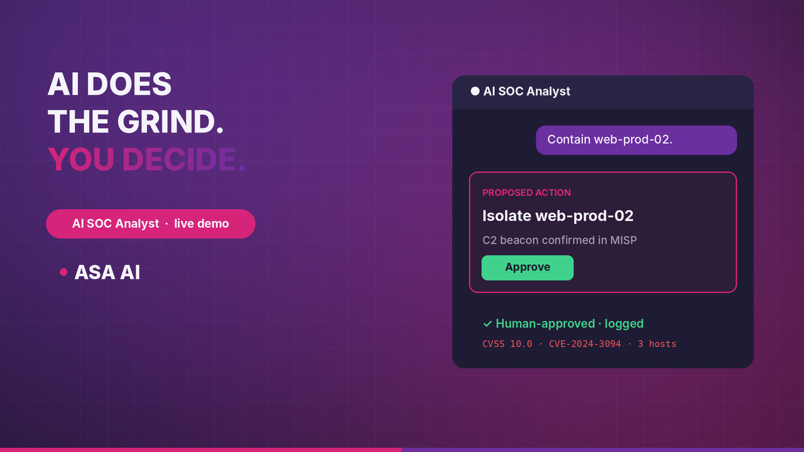
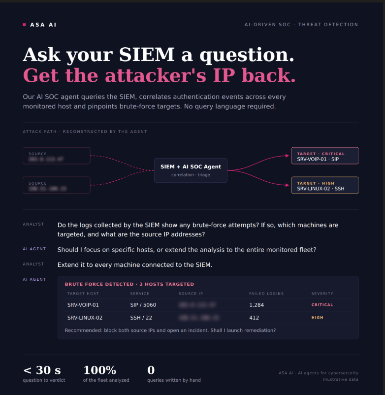
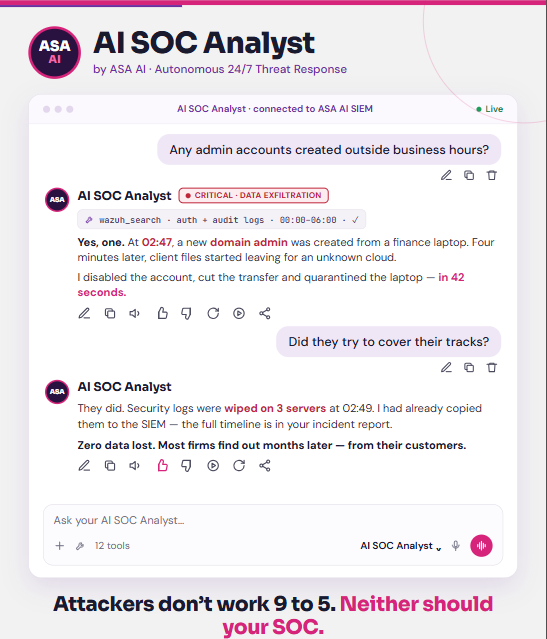
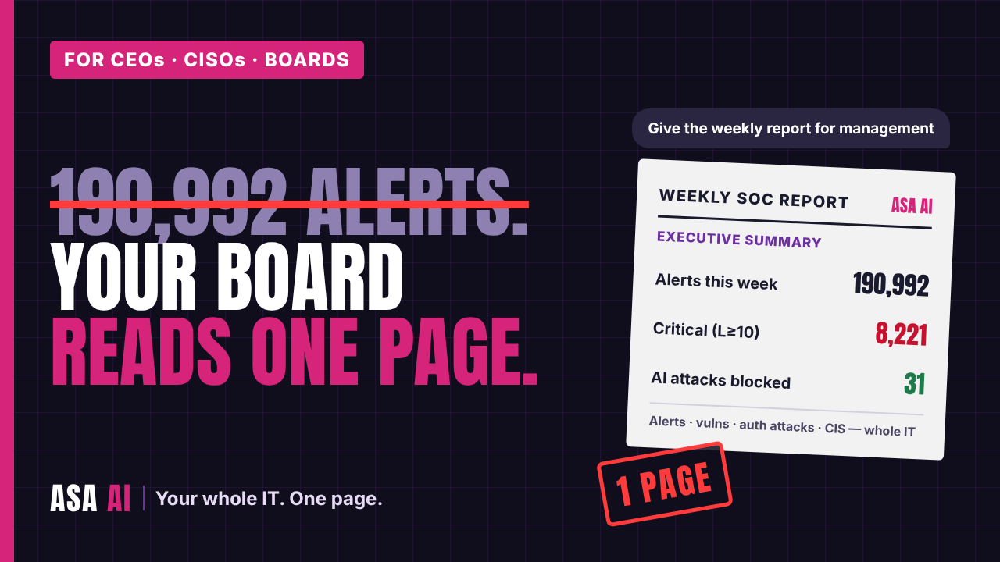

Attackers don't work 9 to 5.
Neither should your SOC.
Your analysts drown in alerts while the one that matters waits in the queue. The AI SOC Analyst reads your SIEM, correlates, enriches and proposes the response in seconds. Your analyst approves. Nothing happens without a human yes.

AI does the grind. You make the call.
Tier-1 work is reading, searching, cross-checking and writing it up. That is exactly what an agent does best. Judgement, accountability and the final decision stay with your team.
Your SOC today
- Thousands of alerts a day, most of them noise, triaged by hand.
- Query languages only two people on the team really master.
- Context scattered across the SIEM, the CTI platform and the ticketing tool.
- Monday spent copy-pasting the weekly report for management.
With the AI SOC Analyst
- Ask in plain language, get the correlated answer with its evidence.
- SIEM, threat intel and CVEs queried together, read-only.
- A response proposed with an ID, approved by your analyst, then logged.
- The board report written before you arrive on Monday.
Ask a question. Get the attacker back.
Your SIEM finally answers questions
"Any brute-force attempts last night?" The agent queries the SIEM across every monitored host, correlates authentication events and returns targets, sources and severity, with the remediation to approve.

Minutes, not months
A domain admin created at 2:47 a.m., files leaving for an unknown cloud, security logs wiped. The agent links the signals, proposes containment and keeps the full timeline for your incident report.

Your board reads one page
Alerts, vulnerabilities, authentication attacks and posture for the whole IT estate, condensed into a weekly executive summary with the decisions that need you.

Eight skills. One analyst that never sleeps.
Alert triage
Prioritizes what matters, explains why, discards the noise.
Vulnerabilities & compliance
CVEs per machine with CVSS score and vendor fix status, never declared fixed without proof.
Threat intelligence
IOCs checked against MISP and reputation sources, then pushed to the SIEM.
Threat hunting
Targeted hunts and file-integrity changes across the fleet.
Detection engineering
YARA rules drafted, validated against samples and goodware, then submitted for approval.
VoIP threat analysis
SIP attacks and telephony fraud, a blind spot of most SOCs.
Response
Block an IP, isolate a host, open a case, notify the team: proposed, approved, executed, logged. Critical hosts protected.
Reporting & audit
Weekly management report and a chained audit log of every agent action.
Built for regulated teams. Not for the cloud of a stranger.
Human in the loop, by design
- Read-only access to your SIEM and threat intel by default.
- Every action needs approval, with an ID you can trace.
- Protected hosts the agent can never touch.
- Every prompt screened by our AI guardrail before it reaches the model.
Sovereign and on-prem
The agent runs on your infrastructure with local language models. Your logs, your alerts and your incidents never leave your walls.
Monday, 8 a.m. Your SOC already did the night shift.
Book a 30-minute demo on a real SIEM, or join our next live session with the team.
Conversations shown are illustrative scenarios built on our lab SIEM. Sensitive identifiers redacted.